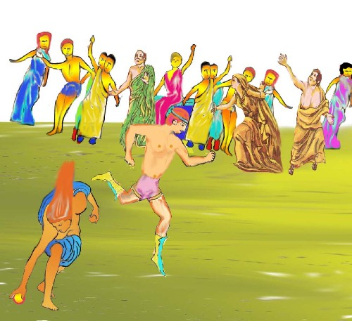

金 苹 果
布 芬 契 原著，江铭辉译
无可奈何，多么让人遗憾的理由是爱特兰塔是一个少女，她的脸蛋就女孩而言实际上可能说富于男孩子气息，但就男孩子说，又太女性化。
她的命已已算过，大意是：「爱特兰塔不能结婚；你将毁灭在婚姻上。」这个神
谕太可怕了，她避开男人的社会，全心热衷于打猎的活动。对所有追求者（追求者太多了），她赋予一个条件使她对于他们的逼婚减轻不少，同时往往很奏致， 「任何人倘能跑赢我，我将是他的奖品；可是凡尝试而失败的人，都要接受处死的惩罚。」
尽管如此严厉的条件，仍有人愿意尝试。希波米尼斯被任命为赛跑的裁判。他说：「世上那有这样鲁莽的人。为一个妻子而冒如此的险呢？」但是当他看见她脱下长袍准备比赛的时候，他改变了想法，说：「年轻人，原谅我，我先前没认清你们竞争的奖品。」当他环视他们时，他希望他们全部失败。对于所有可能会赢的人，他妒忌有加。当他这样想着，这位处女己飞奔出去了。她奔跑的姿态，看上去比先前更美。微风彷佛给她的双脚添上翅膀，她的头发在肩上飞扬，衣服的边缘轻飘在她的身后。雪白的皮肤上泛映出些微的桃红颜色，彷佛一廉桃红的薄幔映在雪白大理石墙壁上。她的所有竞赛者全被远远甩在后面，毫无怜悯地被处死。
希波米尼斯不因这个结局而气馁，他两眼盯着这个处女说：「何必以击败这些动作迟钝的家伙而自豪呢？我参加竞赛。」爱脱兰塔以爱怜的脸色望他，简直不知道是否击败他或不击败他好。「何方神圣能够打动这样年轻、貌美的男子抛弃他的生命呢?我怜悯他，不是为他的貌美 (然而他非常美貌)，而是他的年轻。但愿他放弃这场比赛，如果他发狂要参赛，我希望他会追上我。」她踌躇着，再三转变这些念头，可是观众对这场竞赛渐渐不耐烦。她的父亲也催她快些准备。于是希波米尼斯向维纳斯致敬，作了祷告：「维纳斯，帮助我，因为你引导我来比赛。」维纳斯听见，愿意给予援助。
维纳斯，她自己萨普勒斯岛上神庙的花园里，有一棵黄色树叶、黄色枝干和金色水果的树木。因此她就摘下三颗金黄苹果，在神不知鬼不觉的情况下，给希波米尼斯，并且教他如何使用。鸣跑信号放出，每一个人从起点出发，飞奔在沙滩上。他们的步伐是如此的经快，你几乎不用想，他们纵使在河上或麦浪上奔跑，也不会沉没。观众的呼叫声，鼓舞希波米尼斯，「好呀，好呀，尽量跑！赶快，赶快！你追上她了！不要放松！再努力一下！」到底年青人或少女听了这些呼叫声会更加高兴，这是有待商权的。可是年青人的呼吸已经接不上了，他的喉咙干燥，离终点站尚远。就在这时候，他抛下一颗金苹果。处女非常惊呀，停步将它拾起。希波米尼斯射到前面去了，四周爆出狂叫声。她又加倍努力，不久又赶上他了。再次，他丢下一颗金苹果，她又停下来，可是又给她赶上。终点站快接近了，只剩下最后一次机会。「阿！女神！」年青人祈祷，「完成妳的礼物罢！」，便把最后一只苹果丢在一旁。她望着它，但犹豫着，维纳斯鼓励她转身去拿。她照做，就这样跑失了。年青人带走他的奖品。

图：在观众欢呼声中，年青人趁着少女屈身捡金苹果之际，迎头超前。
但是这对情侣是如此充满在幸福中，忘记应给维纳斯的尊敬，女神对他们的忘恩负义，感到激怒。她使他们得罪薛比丽女神（薛比丽是拉丁名字，大地之母，希腊人叫盖亚，宙斯的母亲）。此位女神权力至大，从来没有人冒犯她还能幸免的。她除去了他们的人形，将他们变为性格相似的动物。狩猎女英雄以她追求者的鲜血，洋洋得意，将地变为一头母狮，而她的主公则变为一头雄狮，然后用轭将牠们套在座车上。现在我们祇要看见薛比丽女神的像，不论是雕刻或绘画，还可以看见他们两个。
ATALANTA. (原文)
The innocent cause of so much sorrow was a maiden whose face you might truly say was boyish for a girl, yet too girlish for a boy. Her fortune had been told, and it was to this effect: "Atalanta, do not marry; marriage will be your ruin." Terrified by this oracle, she fled the society of men, and devoted herself to the sports of the chase. To all suitors (for she had many) she imposed a condition which was generally effectual in relieving her of their persecutions- "I will be the prize of him who shall conquer me in the race; but death must be the penalty of all who try and fail." In spite
of this hard condition some would try. Hippomenes was to be judge of the race. "Can it be possible that any will be so rash as to risk so much for a wife?" said he. But when he saw her lay aside her robe for the race, he changed his mind, and said, "Pardon me, youths, I knew not the prize you were competing for." As he surveyed them he wished them all to be beaten, and swelled with envy of any one that seemed at all likely to win. While such were his thoughts, the virgin darted forward. As she ran she looked more beautiful than ever. The breezes seemed to give wings to her feet; her hair flew over her shoulders, and the gay fringe of her garment fluttered behind her. A ruddy hue tinged the whiteness of her skin, such as a crimson curtain casts on a marble wall. All her competitors were distanced, and were put to death without mercy. Hippomenes, not daunted by this result, fixing his eyes on the virgin, said, "Why boast of beating those laggards? I offer myself for the contest." Atalanta looked at him with a pitying countenance, and hardly knew whether she would rather conquer him or not. "What god can tempt one so young and handsome to throw himself away? I pity him, not for his beauty (yet he is beautiful), but for his youth. I wish he would give up the race, or if he will be so mad, I hope he may outrun me." While she hesitates, revolving these thoughts, the spectators grow impatient for the race, and her father prompts her to prepare. Then Hippomenes addressed a prayer to Venus: "Help me, Venus, for you have led me on." Venus heard and was propitious.
In the garden of her temple, in her own island of Cyprus, is a tree with yellow leaves and yellow branches and golden fruit. Hence she gathered three golden apples, and unseen by any one else, gave them to Hippomenes, and told him how to use them. The signal is given; each starts from the goal and skims over the sand. So light their tread, you would almost have thought they might run over the river surface or over the waving grain without sinking. The cries of the spectators cheered Hippomenes,- "Now, now, do your best! haste, haste! you gain on her! relax not! one more effort!" It was doubtful whether the youth or the maiden heard these cries with the greater pleasure. But his breath began to fail him, his throat was dry, the goal yet far off. At that moment be threw down one of the golden apples. The virgin was all amazement. She stopped to pick it up. Hippomenes shot ahead. Shouts burst forth from all sides. She redoubled her efforts, and soon overtook him. Again he threw an apple. She stopped again, but again came up with him. The goal was near; one chance only remained. "Now, goddess," said he, "prosper your gift!" and threw the last apple off at one side. She looked at it, and hesitated; Venus impelled her to turn aside for it. She did so, and was vanquished. The youth carried off his prize.
But the lovers were so full of their own happiness that they forgot to pay due honour to Venus; and the goddess was provoked at their ingratitude. She caused them to give
offence to Cybele. That powerful goddess was not to be insulted with impunity. She took from them their human form and turned them into animals of characters resembling their own: of the huntress-heroine, triumphing in the blood of her lovers, she made a lioness, and of her lord and master a lion, and yoked them to her car, where they are still to be seen in all representations, in statuary or painting, of the goddess Cybele.